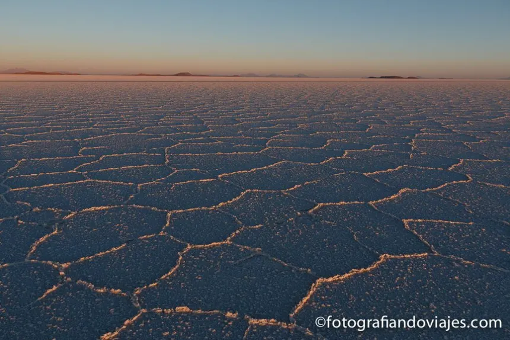
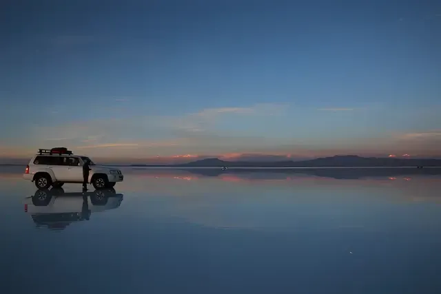
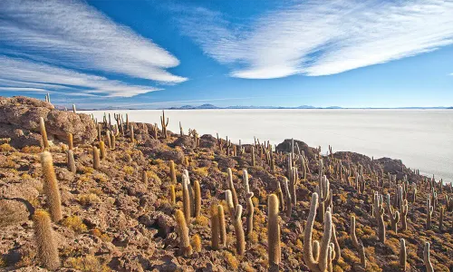

El Salar de Uyuni
Información general
El Salar de Uyuni es el mayor salar continuo del mundo. Es una enorme extensión de sal situada a gran altura en el altiplano boliviano. Durante la temporada de lluvias, una fina capa de agua puede generar reflejos del cielo; en la estación seca, la superficie muestra patrones geométricos de sal.
Atractivos turisticos
Isla Incahuasi
Isla rocosa ubicada dentro del salar, conocida por sus cactus gigantes y sus vistas panoramicas.

Ojos del Salar
Pequeñas surgencias de agua que aparecen en distintos sectores de la superficie salina.

Cementerio de Trenes
Lugar cercano a Uyuni donde se conservan antiguas locomotoras y vagones.

Gastronomia
Algunas comidas y preparaciones que se pueden probar:
Sopa de quinoa
Plato preparado con un producto tradicional del altiplano.
Carne de llama
Carne regional que puede encontrarse en algunos restaurantes de la zona.
Salteñas
Empanadas jugosas muy populares en Bolivia, disponibles en locales y puestos.
Sitios famosos
Espejo del cielo
Efecto de reflejo que puede observarse cuando el salar esta cubierto por una capa poco profunda de agua.
Montones y hoteles de sal
Construcciones y elementos caracteristicos de la zona, realizados aprovechando la sal del salar.
Actividades para turistas
- Realizar una excursion guiada en vehiculo autorizado por el salar.
- Fotografiar los paisajes y los reflejos cuando las condiciones lo permiten.
- Visitar la Isla Incahuasi si el acceso esta habilitado.
- Conocer el Cementerio de Trenes y la localidad de Uyuni.